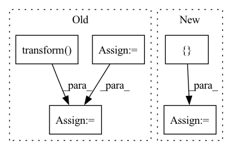

Pattern ID :3132

Before Change
// Hyperopt training function
def hyper_objective(learning_rate):
keras_model = train(learning_rate)
pred_df = keras_model.transform(test_df)
argmax = udf(lambda v: float(np.argmax(v)), returnType=T.DoubleType())
pred_df = pred_df.withColumn("label_pred", argmax(pred_df.label_prob))
evaluator = MulticlassClassificationEvaluator(predictionCol="label_pred", labelCol="label", metricName="accuracy")
accuracy = evaluator.evaluate(pred_df)
print("Test accuracy:", accuracy)
with mlflow.start_run():
After Change
model = train(learning_rate)
// Write checkpoint
meta = {
"custom_objects": model.getCustomObjects(),
"floatx": model._get_floatx(),
"metadata": model._get_metadata(),
}
save_checkpoint(checkpoint_dir, model.getModel(), None, learning_rate, meta)
test_loss = test_model(model)
In pattern: SUPERPATTERN
Frequency: 3
Non-data size: 5
Instances
Fragment ID: 11984481
Project Name: oap-project/cloudtik
Commit Name: 1d4628d27213dc5dfa75fffa8ba02ec2be572e67
Time: 2022-12-06
Author: haifeng.chen@intel.com
File Name: example/ml/jobs/spark-mlflow-hyperopt-horovod-tensorflow.py
M Class Name: AnonimousClass
N Class Name: AnonimousClass
M Method Name: hyper_objective(1)
N Method Name: hyper_objective(1)
M Parent Class:
N Parent Class:
M File Name: example/ml/jobs/spark-mlflow-hyperopt-horovod-tensorflow.py
N File Name: example/ml/jobs/spark-mlflow-hyperopt-horovod-tensorflow.py
M Start Line: 183
M End Line: 195
N Start Line: 284
N End Line: 299
'>
Before Change
def generate_order(stock: str, start_idx: int, end_idx: int) -> None:
df = pd.read_pickle(DATA_PATH / f"{stock}.pkl")
df = df.groupby("date").take(range(start_idx, end_idx)).droplevel(level=0)
div = df["$volume0"].rolling((end_idx - start_idx) * 60).mean().shift(1).groupby(level="date").transform("first")
order_all = pd.DataFrame(df.groupby(level=(2, 0)).mean().dropna())
order_all["amount"] = np.random.lognormal(-3.28, 1.14) * order_all["$volume0"]
order_all = order_all[order_all["amount"] > 0.0]
After Change
if len(df) == 0 or df.isnull().values.any() or min(df["$volume0"]) < 1e-5:
return False
df["date"] = df["datetime"].dt.date.astype("datetime64")
df = df.set_index(["instrument", "datetime", "date"])
df = df.groupby("date").take(range(start_idx, end_idx)).droplevel(level=0)
order_all = pd.DataFrame(df.groupby(level=(2, 0)).mean().dropna())
'>
Fragment ID: 11984491
Project Name: microsoft/qlib
Commit Name: 7f1e8c52063e92cfcd11228255c2a0cb44798a90
Time: 2023-04-26
Author: huoranli@microsoft.com
File Name: examples/rl_order_execution/scripts/gen_training_orders.py
M Class Name: AnonimousClass
N Class Name: AnonimousClass
M Method Name: generate_order(3)
N Method Name: generate_order(3)
M Parent Class:
N Parent Class:
M File Name: examples/rl_order_execution/scripts/gen_training_orders.py
N File Name: examples/rl_order_execution/scripts/gen_training_orders.py
M Start Line: 15
M End Line: 17
N Start Line: 15
N End Line: 40
'>
Before Change
// Hyperopt training function
def hyper_objective(learning_rate):
torch_model = train(learning_rate)
pred_df = torch_model.transform(test_df)
argmax = udf(lambda v: float(np.argmax(v)), returnType=T.DoubleType())
pred_df = pred_df.withColumn("label_pred", argmax(pred_df.label_prob))
evaluator = MulticlassClassificationEvaluator(predictionCol="label_pred", labelCol="label", metricName="accuracy")
accuracy = evaluator.evaluate(pred_df)
print("Test accuracy:", accuracy)
with mlflow.start_run():
After Change
model = train(learning_rate)
// Write checkpoint
meta = {
"input_shapes": model.getInputShapes(),
"metadata": model._get_metadata(),
}
save_checkpoint(checkpoint_dir, model.getModel(), None, learning_rate, meta)
test_loss = test_model(model)
mlflow.log_metric("learning_rate", learning_rate)
'>
Fragment ID: 11984473
Project Name: oap-project/cloudtik
Commit Name: cf76222205e7c6ad94a12bddf54446f8c2ed5c77
Time: 2022-12-06
Author: haifeng.chen@intel.com
File Name: example/ml/jobs/spark-mlflow-hyperopt-horovod-pytorch-mnist.py
M Class Name: AnonimousClass
N Class Name: AnonimousClass
M Method Name: hyper_objective(1)
N Method Name: hyper_objective(1)
M Parent Class:
N Parent Class:
M File Name: example/ml/jobs/spark-mlflow-hyperopt-horovod-pytorch-mnist.py
N File Name: example/ml/jobs/spark-mlflow-hyperopt-horovod-pytorch-mnist.py
M Start Line: 186
M End Line: 197
N Start Line: 252
N End Line: 265